library(tidyverse)
library(viridis)15 Overview of the Generalized Linear Model
Along with Kruschke’s text, in this part if the project we’re moving away from simple Bernoulli coin flipping examples to more complicated analyses of the type we’d actually see in applied data analysis. As Kruschke explained, we’ll be using a
versatile family of models known as the generalized linear model [GLM; Nelder & Wedderburn (1972); Nelder & Wedderburn (1972)]. This family of models comprises the traditional “off the shelf” analyses such as \(t\) tests, analysis of variance (ANOVA), multiple linear regression, logistic regression, log-linear models, etc. (Kruschke, 2015, p. 420)
15.1 Types of variables
“To understand the GLM and its many specific cases, we must build up a variety of component concepts regarding relationships between variables and how variables are measured in the first place (p. 420).”
15.1.1 Predictor and predicted variables
It’s worth repeating the second paragraph of this subsection in its entirety.
The key mathematical difference between predictor and predicted variables is that the likelihood function expresses the probability of values of the predicted variable as a function of values of the predictor variable. The likelihood function does not describe the probabilities of values of the predictor variable. The value of the predictor variable comes from outside the system being modeled, whereas the value of the predicted variable depends on the value of the predictor variable. (p. 420)
This is one of those fine points that can be easy to miss when you’re struggling through the examples in this book or chest-deep in the murky waters of your own real-world data problem. But write this down on a sticky note and put it in your sock drawer or something. There are good reasons to fret about the distributional properties of your predictor variables–rules of thumb about the likelihood aren’t among them.
15.1.2 Scale types: metric, ordinal, nominal, and count
I don’t know that I’m interested in detailing the content of this section. But it’s worth while considering what Kruschke wrote in its close.
Why we care: We care about the scale type because the likelihood function must specify a probability distribution on the appropriate scale. If the scale has two nominal values, then a Bernoulli likelihood function may be appropriate. If the scale is metric, then a normal distribution may be appropriate as a probability distribution to describe the data. Whenever we are choosing a model for data, we must answer the question, What kind of scale are we dealing with? (p. 423, emphasis in the original)
15.2 Linear combination of predictors
“The core of the GLM is expressing the combined influence of predictors as their weighted sum. The following sections build this idea by scaffolding from the simplest intuitive cases” (p. 423).
15.2.1 Linear function of a single metric predictor
Let’s load the primary packages for this chapter.
“A linear function is the generic, ‘vanilla,’ off-the-shelf dependency that is used in statistical models” (p. 424). Its basic form is
\[y = \beta_0 + \beta_1 x,\]
where \(y\) is the variable being predicted and \(x\) is the predictor. \(\beta_0\) is the intercept (i.e., the expected value when \(x\) is zero) and \(\beta_1\) is the expected increase in \(y\) after a one-unit increase in \(x\).
Before we make our version of Figure 15.1, let’s talk about our theme and color palette. In this chapter, we’ll base our overall on ggplot2::theme_linedraw(). We’ll take selections from option = "E" from the viridis package to make our color palette. Based on our ggplot2 skills from the last few chapters, these moves are pretty mundane. We can go further.
In this chapter, we’ll extend our skillset by practicing how to alter the default settings of our ggplot2 geoms. If you browse through the content of the text, you’ll see we’ll a lot of the upcomming plots will require lines of various sorts. We’ll make the bulk of those lines with geom_line(), geom_hline(), geom_vline(), and geom_segment(). as a first step, it’d be handy to see how their default aesthetic settings are defined. Here’s how to do that for geom_line().1
ggplot2:::validate_subclass("line", "Geom")$default_aes # Also: `GeomLine$default_aes`Aesthetic mapping:
* `colour` -> `from_theme(colour %||% ink)`
* `linewidth` -> `from_theme(linewidth)`
* `linetype` -> `from_theme(linetype)`
* `alpha` -> NAWe can use the ggplot2::update_geom_defaults() function to change those default settings. Here’s how we might go about increasing the default size and color parameters.
update_geom_defaults(
geom = "line",
new = list(
color = viridis_pal(option = "E")(9)[2],
linewidth = 1)
)Now confirm our new defaults.
ggplot2:::validate_subclass("line", "Geom")$default_aesAesthetic mapping:
* `colour` -> "#05366EFF"
* `linewidth` -> 1
* `linetype` -> `from_theme(linetype)`
* `alpha` -> NATo undo such an action, set the new argument to NULL.
update_geom_defaults(geom = "line", new = NULL) # Undo what we just did
ggplot2:::validate_subclass("line", "Geom")$default_aes # CheckAesthetic mapping:
* `colour` -> `from_theme(colour %||% ink)`
* `linewidth` -> `from_theme(linewidth)`
* `linetype` -> `from_theme(linetype)`
* `alpha` -> NAYou could also use the reset_geom_defaults() function to undo all custom changes.
Here we’ll update the defaults of all four of our line-oriented geoms and change the settings for our global plot theme.
update_geom_defaults(
geom = "line",
new = list(
color = viridis_pal(option = "E")(9)[2],
linewidth = 1)
)
update_geom_defaults(
geom = "hline",
new = list(
color = viridis_pal(option = "E")(9)[8],
linewidth = 1/4,
linetype = 2)
)
update_geom_defaults(
geom = "vline",
new = list(
color = viridis_pal(option = "E")(9)[8],
linewidth = 1/4,
linetype = 2)
)
update_geom_defaults(
geom = "segment",
new = list(
color = viridis_pal(option = "E")(9)[5],
linewidth = 1/4)
)
theme_set(
theme_linedraw() +
theme(panel.grid = element_blank())
)You can learn more about these methods here and here. Let’s see what we’ve done by making the left panel of Figure 15.1.
# For annotation
d_text <- tibble(x = 2.25,
y = c(-5, 10),
label = c("y = -5 + 2x", "y = 10 + 2x"))
# Primary data
tibble(x = -3:7) |>
mutate(y_1 = -5 + 2 * x,
y_2 = 10 + 2 * x) |>
# Plot
ggplot(aes(x = x)) +
geom_vline(xintercept = 0) +
geom_hline(yintercept = 0) +
geom_line(aes(y = y_1)) +
geom_line(aes(y = y_2)) +
geom_text(data = d_text,
aes(y = y, label = label),
size = 4.5) +
labs(y = "y",
title = "Different Intercepts") +
coord_cartesian(xlim = c(-2, 6),
ylim = c(-10, 25))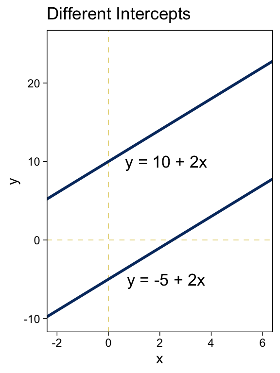
Did you notice how we followed the form of the basic linear function when we defined the values for y_1 and y_2? It’s that simple! Here’s the right panel.
tibble(x = -3:7) |>
mutate(y_1 = 10 + -0.5 * x,
y_2 = 10 + 2 * x) |>
ggplot(aes(x = x)) +
geom_vline(xintercept = 0) +
geom_hline(yintercept = 0) +
geom_line(aes(y = y_1)) +
geom_line(aes(y = y_2)) +
annotate(geom = "text",
x = 4, y = c(11, 13.75),
label = c("y = 10 + -0.5x", "y = 10 + 2x"),
size = 4.5) +
labs(y = "y",
title = "Different Slopes") +
coord_cartesian(xlim = c(-2, 6),
ylim = c(-10, 25))
Summary of why we care. The likelihood function includes the form of the dependency of \(y\) on \(x\). When \(y\) and \(x\) are metric variables, the simplest form of dependency, both mathematically and intuitively, is one that preserves proportionality. The mathematical expression of this relation is a so-called linear function. The usual mathematical expression of a line is the \(y\)-intercept form, but sometimes a more intuitive expression is the \(x\) threshold form. Linear functions form the core of the GLM. (pp. 424–425, emphasis in the original)
15.2.2 Additive combination of metric predictors
The linear combination of \(K\) predictors has the general form
\[\begin{align*} y & = \beta_0 + \beta_1 x_1 + \dots + \beta_K x_K \\ & = \beta_0 + \sum_{k = 1}^K \beta_k x_k. \end{align*}\]
In the special case where \(K = 0\), you have an intercept-only model,
\[y = \beta_0,\]
in which \(\beta_0\) simply models the mean of \(y\).
We won’t be able to reproduce the wireframe plots of Figure 15.2, exactly. But we can use some geom_raster() tricks from back in Chapter 10 to express the third \(y\) dimension as fill gradients.
crossing(x1 = seq(from = 0, to = 10, by = 0.5),
x2 = seq(from = 0, to = 10, by = 0.5)) |>
mutate(`y[1] == 0 + 1 * x[1] + 0 * x[2]` = 0 + 1 * x1 + 0 * x2,
`y[2] == 0 + 0 * x[1] + 2 * x[2]` = 0 + 0 * x1 + 2 * x2,
`y[3] == 0 + 1 * x[1] + 2 * x[2]` = 0 + 1 * x1 + 2 * x2,
`y[4] == 10 + 1 * x[1] + 2 * x[2]` = 10 + 1 * x1 + 2 * x2) |>
pivot_longer(cols = -c(x1, x2), values_to = "y") |>
ggplot(aes(x = x1, y = x2, fill = y)) +
geom_raster() +
scale_x_continuous(expression(x[1]), expand = c(0, 0),
breaks = seq(from = 0, to = 10, by = 2)) +
scale_y_continuous(expression(x[2]), expand = c(0, 0),
breaks = seq(from = 0, to = 10, by = 2)) +
scale_fill_viridis_c(option = "E") +
coord_equal() +
facet_wrap(~ name, labeller = label_parsed)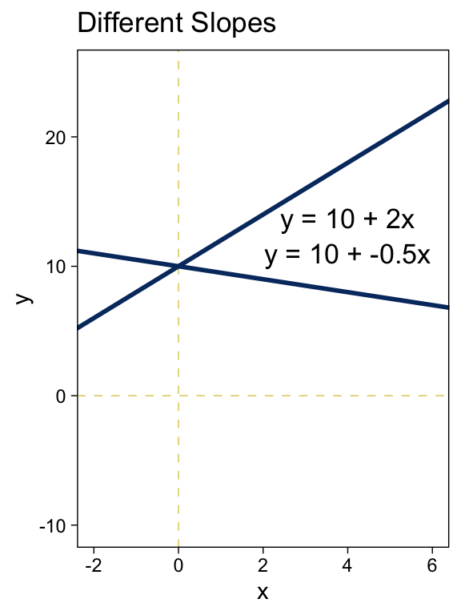
Here we’ve captured some of Kruschke’s grid aesthetic by keeping the by argument within seq() somewhat coarse and omitting the interpolate = TRUE argument from geom_raster(). If you’d prefer smoother fill transitions for the \(y\)-values, set by = 0.1 and interpolate = TRUE.
15.2.3 Nonadditive interaction of metric predictors
As it turns out, “the combined influence of two predictors does not have to be additive” (p. 427). Let’s explore what that can look like with our version of Figure 15.3.
crossing(x1 = seq(from = 0, to = 10, by = 0.5),
x2 = seq(from = 0, to = 10, by = 0.5)) |>
mutate(`y[1] == 0 + 0 * x[1] + 0 * x[2] + 0.2 * x[1] * x[2]` = 0 + 0 * x1 + 0 * x2 + 0.2 * x1 * x2,
`y[2] == 0 + 1 * x[1] + 1 * x[2] + 0 * x[1] * x[2]` = 0 + 1 * x1 + 1 * x2 + 0 * x1 * x2,
`y[3] == 0 + 1 * x[1] + 1 * x[2] + -0.3 * x[1] * x[2]` = 0 + 1 * x1 + 1 * x2 + -0.3 * x1 * x2,
`y[4] == 0 + -1 * x[1] + 1 * x[2] + 0.2 * x[1] * x[2]` = 0 + -1 * x1 + 1 * x2 + 0.2 * x1 * x2) |>
pivot_longer(cols = -c(x1, x2), values_to = "y") |>
ggplot(aes(x = x1, y = x2, fill = y)) +
geom_raster() +
scale_x_continuous(expression(x[1]), expand = c(0, 0),
breaks = seq(from = 0, to = 10, by = 2)) +
scale_y_continuous(expression(x[2]), expand = c(0, 0),
breaks = seq(from = 0, to = 10, by = 2)) +
scale_fill_viridis_c(option = "E") +
coord_equal() +
facet_wrap(~ name, labeller = label_parsed)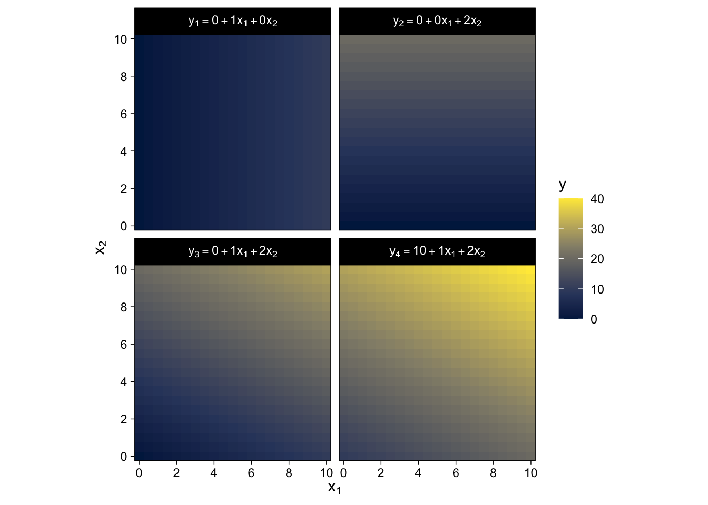
Did you notice all those * operators in the mutate() code? We’re no longer restricting ourselves to additive functions. We’re square in the middle of multiplicative town!
There is a subtlety in the use of the term “linear” that can sometimes cause confusion in this context. The interactions shown in Figure 15.3 are not linear on the two predictors \(x_1\) and \(x_2\). But if the product of the two predictors, \(x_1 x_2\), is thought of as a third predictor, then the model is linear on the three predictors, because the predicted value of \(y\) is a weighted additive combination of the three predictors. This reconceptualization can be useful for implementing nonlinear interactions in software for linear models, but we will not be making that semantic leap to a third predictor, and instead we will think of a nonadditive combination of two predictors.
A nonadditive interaction of predictors does not have to be multiplicative. Other types of interaction are possible. (p. 428, emphasis in the original)
In my experience, this “subtlety” is really easy to misunderstand. You might be surprised how often it pops up even among senior scholars. Which is all to say, this stuff is difficult, so give yourself a break.
15.2.4 Nominal predictors
15.2.4.1 Linear model for a single nominal predictor
Instead of representing the value of the nominal predictor by a single scalar value \(x\), we will represent the nominal predictor by a vector \(\vec{x} = \langle x_{[1]},...,x_{[J]} \rangle\) where \(J\) is the number of categories that the predictor has…
We will denote the baseline value of the prediction as \(\beta_0\). The deflection for the \(j\)th level of the predictor is denoted \(\beta_{[j]}\). Then the predicted value is
\[\begin{align*} y & = \beta_0 + \beta_{[1]} x_{[1]} + \dots + \beta_{[J]} x_{[J]} \\ & = \beta_0 + \vec{\beta} \cdot \vec{x} \end{align*}\]
where the notation \(\vec{\beta} \cdot \vec{x}\) is sometimes called the “dot product” of the vectors. (p. 429)
15.2.4.2 Additive combination of nominal predictors
When you have two additive nominal predictors, the model follows the form
\[\begin{align*} y & = \beta_0 + \vec \beta_1 \vec x_1 + \vec \beta_2 \vec x_2 \\ & = \beta_0 + \sum_{j} \beta_{1[j]} x_{1[j]} + \sum_{k} \beta_{2[k]} x_{2[k]}, \end{align*}\]
given the constraints
\[\sum_{j} \beta_{1[j]} = 0 \;\;\; \text{and} \;\;\; \sum_{k} \beta_{2[k]} = 0.\]
Both panels in Figure 15.4 are going to require three separate data objects. Here’s the code for the top panel.
d_arrow <- tibble(x = c(0.1, 1.1, 2.1),
y = c(1, 1.69, 1.69),
yend = c(1.69, 1.69 + 0.07, 1.69 - 0.07))
d_text <- tibble(x = c(0.44, 1.460, 2.510),
y = c(1.68, 1.753, 1.625),
label = c("beta[0] == 1.69", "beta['[1]'] == 0.07", "beta['[2]'] == -0.07"))
tibble(x = 1:2,
y = c(1.69 + 0.07, 1.69 - 0.07)) |>
ggplot(aes(x = x, y = y)) +
geom_hline(yintercept = 1.69) +
geom_col(fill = viridis_pal(option = "E")(9)[2], width = 0.075) +
geom_segment(data = d_arrow,
aes(xend = x, yend = yend),
arrow = arrow(length = unit(0.2, "cm"))) +
geom_text(data = d_text,
aes(label = label),
parse = TRUE, size = 3.5) +
scale_x_continuous(breaks = 1:2, labels = c("<1,0>", "<0,1>")) +
coord_cartesian(xlim = c(0, 3),
ylim = c(1.5, 1.75)) +
theme(axis.ticks.x = element_blank())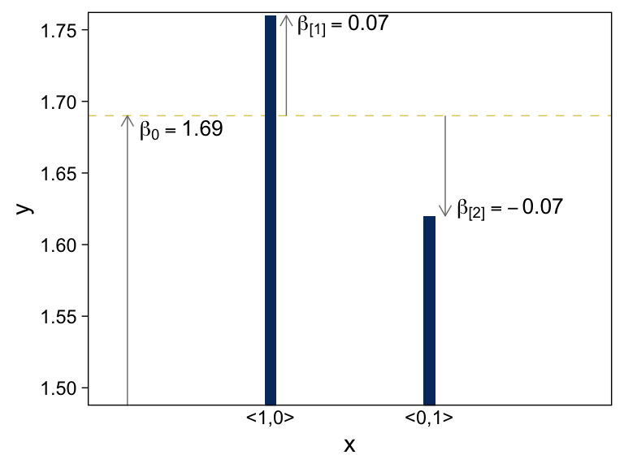
Here’s the code for the bottom panel.
d_arrow <- tibble(x = c(0.1, 1.1, 2.1, 3.1, 4.1, 5.1),
y = rep(c(50, 101), times = c(1, 5)),
yend = c(101, 101 + 4, 101 - 3, 101 - 2, 101 + 6, 101 - 5))
d_text <- tibble(x = c(0.41, 1.36, 2.41, 3.4, 4.35, 5.4),
y = c(100.5, 104.5, 98.5, 99.5, 106.5, 96.5),
label = c("beta[0] == 101", "beta['[1]'] == 4", "beta['[2]'] == -3",
"beta['[3]'] == -2", "beta['[4]'] == 6", "beta['[5]'] == -5"))
tibble(x = 1:5,
y = c(101 + 4, 101 - 3, 101 - 2, 101 + 6, 101 - 5)) |>
ggplot(aes(x = x, y = y)) +
geom_hline(yintercept = 101) +
geom_col(fill = viridis_pal(option = "E")(9)[2], width = 0.075) +
geom_segment(data = d_arrow,
aes(xend = x, yend = yend),
arrow = arrow(length = unit(0.2, "cm"))) +
geom_text(data = d_text,
aes(label = label),
parse = TRUE, size = 3.5) +
scale_x_continuous(breaks = 1:5,
labels = c("<1,0,0,0,0>", "<0,1,0,0,0>", "<0,0,1,0,0>", "<0,0,0,1,0>", "<0,0,0,0,1>")) +
coord_cartesian(xlim = c(0, 5.5),
ylim = c(90, 106.5)) +
theme(axis.ticks.x = element_blank())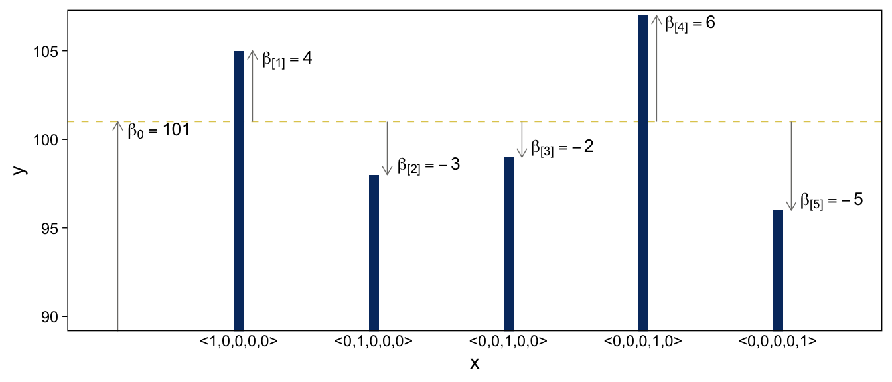
Before we make our versions of the two panels in Figure 15.5, we should note that the values in the prose are at odds with the values implied in the figure. For simplicity, our versions of Figure 15.5 will match up with the values in the original figure, not the prose. For a look at what the figure might have looked like had it been based on the values in the prose, check out Kruschke’s Corrigenda.
Here’s the code for the left panel of Figure 15.5.
d <- tibble(x_1 = rep(c(" <1,0>", "<0,1> "), times = 4),
x_2 = c(rep(0:2, each = 2), -0.25, 0.25),
y = c(8, 10, 3, 5, 4, 6, 8.5, 10.5),
type = rep(c("number", "text"), times = c(6, 2))) |>
mutate(x_1 = factor(x_1, levels = c(" <1,0>", "<0,1> ")))
d |>
filter(type == "number") |>
ggplot(aes(x = x_2, y = y, fill = x_1)) +
geom_col(position = "dodge") +
geom_text(data = d |> filter(type == "text"),
aes(label = x_1, color = x_1)) +
scale_x_continuous(breaks = 0:2, labels = c("<1,0,0>", "<0,1,0>", "<0,0,1>")) +
scale_y_continuous(breaks = seq(from = 0, to = 10, by = 2), expand = expansion(mult = c(0, 0.05))) +
scale_fill_viridis_d(NULL, option = "E", begin = 0.25, end = 0.75) +
scale_color_viridis_d(NULL, option = "E", begin = 0.25, end = 0.75) +
ggtitle("Additive (no interaction)") +
theme(axis.ticks.x = element_blank(),
legend.position = "none")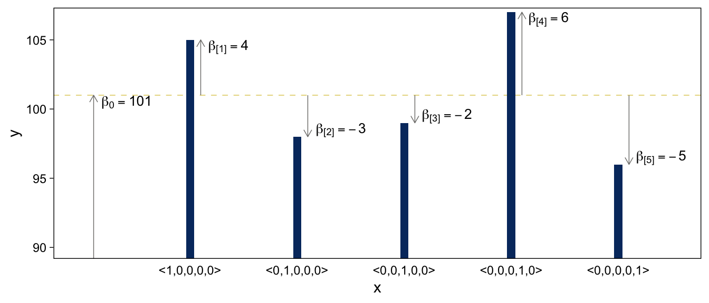
Did you notice our filter() trick in the code?
15.2.4.3 Nonadditive interaction of nominal predictors
We need new notation to formalize the nonadditive influence of a combination of nominal values. Just as \(\vec x_1\) refers to the value of predictor \(1\), and \(\vec x_2\) refers to the value of predictor \(2\), the notation \(\vec x_{1 \times 2}\) will refer to a particular combination of values of predictors \(1\) and \(2\). If there are \(J\) levels of predictor \(1\) and \(K\) levels of predictor \(2\), then there are \(J \times K\) combinations of the two predictors. To indicate a particular combination of levels from predictors \(1\) and \(2\), the corresponding component of \(\vec x_{1 \times 2}\) is set to \(1\) while all other components are set to \(0\). A nonadditive interaction of predictors is formally represented by including a term for the influence of combinations of predictors, beyond the additive influences, as follows: \(y = \beta_0 + \vec \beta_1 \cdot \vec x_1 + \vec \beta_2 \cdot \vec x_2 + \vec \beta_{1 \times 2} \cdot \vec x_{1 \times 2}\). (pp. 432–433, emphasis in the original)
Now we’re in nonadditive interaction land, here’s the code for the right panel of Figure 15.5.
d <- tibble(x_1 = rep(c(" <1,0>", "<0,1> "), times = 4),
x_2 = c(rep(0:2, each = 2), -0.25, 0.25),
y = c(8, 10, 5, 3, 3, 7, 8.5, 10.5),
type = rep(c("number", "text"), times = c(6, 2))) |>
mutate(x_1 = factor(x_1, levels = c(" <1,0>", "<0,1> ")))
d |>
filter(type == "number") |>
ggplot(aes(x = x_2, y = y, fill = x_1)) +
geom_col(position = "dodge") +
geom_text(data = d |> filter(type == "text"),
aes(label = x_1, color = x_1)) +
scale_x_continuous(breaks = 0:2, labels = c("<1,0,0>", "<0,1,0>", "<0,0,1>")) +
scale_y_continuous(breaks = 0:5 * 2, expand = expansion(mult = c(0, 0.05))) +
scale_fill_viridis_d(NULL, option = "E", begin = 0.25, end = 0.75) +
scale_color_viridis_d(NULL, option = "E", begin = 0.25, end = 0.75) +
ggtitle("Non-Additive Interaction") +
theme(axis.ticks.x = element_blank(),
legend.position = "none")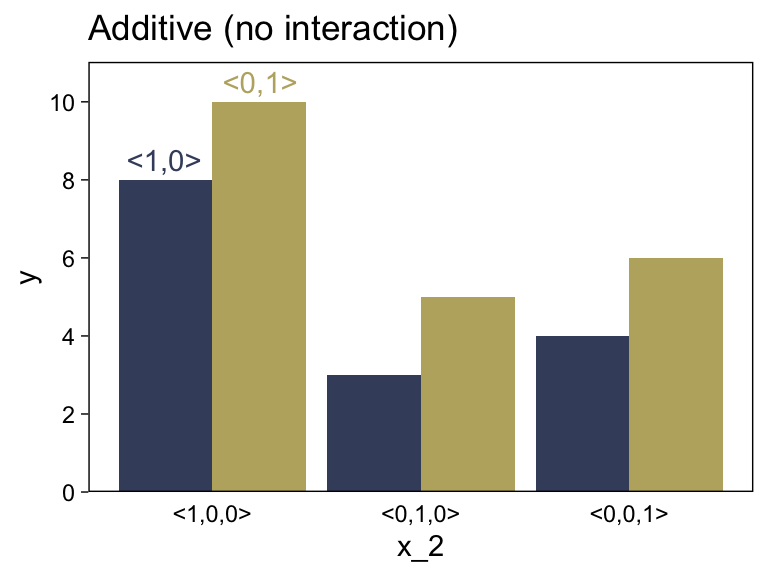
“The main point to understand now is that the term ‘interaction’ refers to a nonadditive influence of the predictors on the predicted, regardless of whether the predictors are measured on a nominal scale or a metric scale” (p. 434, emphasis in the original).
15.3 Linking from combined predictors to noisy predicted data
15.3.1 From predictors to predicted central tendency
After the predictor variables are combined, they need to be mapped to the predicted variable. This mathematical mapping is called the (inverse) link function, and is denoted by \(f()\) in the following equation:
\[y = f(\operatorname{lin}(x))\]
Until now, we have been assuming that the link function is merely the identity function, \(f(\operatorname{lin}(x)) = \operatorname{lin}(x)\). (p. 436, emphasis in the original)
Yet as we’ll see, many models use links other than the identity function.
15.3.1.1 The logistic function
The logistic link function follows the form
\[y = \operatorname{logistic}(x) = \frac{1}{ \big (1 + \exp (-x) \big )}.\]
We can write the logistic function for a univariable metric predictor as
\[y = \operatorname{logistic}(x; \beta_0, \beta_1) = \frac{1}{\big (1 + \exp (-[\beta_0 + \beta_1x]) \big )}.\]
And if we prefer to parameterize it in terms of gain \(\gamma\) and threshold \(\theta\), it’d be
\[y = \operatorname{logistic}(x; \gamma, \theta) = \frac{1}{ \big (1 + \exp (-\gamma [x - \theta]) \big )}.\]
We can make the sexy logistic curves of Figure 15.6 with stat_function(), into which we’ll plug our very own custom make_logistic() function. Here’s the left panel.
make_logistic <- function(x, gamma, theta) {
1 / (1 + exp(-gamma * (x - theta)))
}
# Annotation
d_text <- tibble(x = c(-1, 3),
y = c(0.9, 0.1),
label = str_c("list(gamma == 0.5, theta == ", c(-1, 3), ")"))
# Plot
tibble(x = c(-11, 11)) |>
ggplot(aes(x = x)) +
geom_vline(xintercept = c(-1, 3)) +
geom_hline(yintercept = 0.5) +
stat_function(fun = make_logistic,
args = list(gamma = 0.5, theta = -1),
color = viridis_pal(option = "E")(9)[2], linewidth = 1) +
stat_function(fun = make_logistic,
args = list(gamma = 0.5, theta = 3),
color = viridis_pal(option = "E")(9)[2], linewidth = 1) +
geom_text(data = d_text,
aes(y = y, label = label),
parse = TRUE, size = 3.5) +
scale_y_continuous(expand = expansion(mult = 0), limits = c(0, 1)) +
coord_cartesian(xlim = c(-10, 10)) +
ggtitle("Different Thresholds") 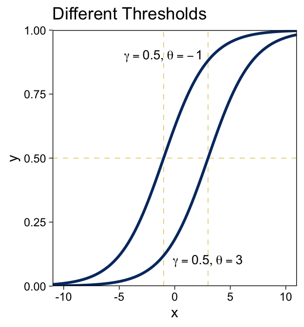
For kicks, we’ll take a different approach for the right panel. Instead of pumping values through stat_function() within our plot code, we’ll use our make_logistic() function within mutate() before beginning the plot code.
# Define the annotation values
d_text <- tibble(x = c(2, -2),
y = c(0.92, 0.4),
label = str_c("list(gamma == ", c(2, 0.2), ", theta == 4)"))
# Make the data
crossing(gamma = c(2, 0.2),
x = seq(from = -11, to = 11, by = 0.2)) |>
mutate(y = make_logistic(x, gamma, theta = 4)) |>
# Plot!
ggplot(aes(x = x, y = y)) +
geom_vline(xintercept = 4) +
geom_hline(yintercept = 0.5) +
geom_line(aes(group = gamma),
color = viridis_pal(option = "E")(9)[2], linewidth = 1) +
geom_text(data = d_text,
aes(label = label),
parse = TRUE, size = 3.5) +
scale_y_continuous(expand = expansion(mult = 0), limits = c(0, 1)) +
coord_cartesian(xlim = c(-10, 10)) +
ggtitle("Different Gains")
I don’t know that one plotting approach is better than the other. It’s good to have options.
To make our two-dimensional version of the wire-frame plots of Figure 15.7, we’ll first want to define the logistic() function.2
logistic <- function(x) {
1 / (1 + exp(-x))
}Now we’ll just extend the same method we used for Figures 15.2 and 15.3.
crossing(x1 = seq(from = -6, to = 6, by = 0.5),
x2 = seq(from = -6, to = 6, by = 0.5)) |>
mutate(`y[1] == logistic(1 * ( 0 * x[1] + 1 * x[2] - 0))` = logistic(1 * ( 0.00 * x1 + 1.00 * x2 - 0)),
`y[2] == logistic(1 * ( 0.71 * x[1] + 0.71 * x[2] - 0))` = logistic(1 * ( 0.71 * x1 + 0.71 * x2 - 0)),
`y[3] == logistic(2 * ( 0 * x[1] + 1 * x[2] - -3))` = logistic(2 * ( 0.00 * x1 + 1.00 * x2 - -3)),
`y[4] == logistic(2 * (-0.71 * x[1] + 0.71 * x[2] - 3))` = logistic(2 * (-0.71 * x1 + 0.71 * x2 - 3))) |>
pivot_longer(cols = c(-x1, -x2), values_to = "y") |>
ggplot(aes(x = x1, y = x2, fill = y)) +
geom_raster() +
scale_x_continuous(expression(x[1]), expand = c(0, 0),
breaks = -3:3 * 2) +
scale_y_continuous(expression(x[2]), expand = c(0, 0),
breaks = -3:3 * 2, position = "right") +
scale_fill_viridis_c(option = "E", limits = c(0, 1)) +
coord_equal() +
theme(legend.position = "left",
strip.text = element_text(size = 8)) +
facet_wrap(~ name, labeller = label_parsed)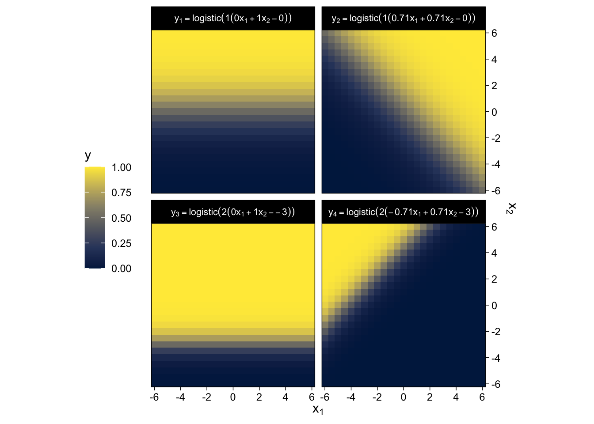
“The threshold determines the position of the logistical cliff. In other words, the threshold determines the \(x\) values for which \(y = 0.5\)… The gain determines the steepness of the logistical cliff” (pp. 437–438, emphasis in the original).
15.3.1.2 The cumulative normal function
The cumulative normal is denoted \(\Phi (x; \mu, \sigma)\), where \(x\) is a real number and where \(\mu\) and \(\sigma\) are parameter values, called the mean and standard deviation of the normal distribution. The parameter \(\mu\) governs the point at which the cumulative normal, \(\Phi(x)\), equals \(0.5\). In other words, \(\mu\) plays the same role as the threshold in the logistic. The parameter \(\sigma\) governs the steepness of the cumulative normal function at \(x = \mu\), but inversely, such that a smaller value of \(\sigma\) corresponds to a steeper cumulative normal. (p. 440, emphasis in the original)
Here we plot the standard normal density in the top panel of Figure 15.8.
tibble(x = seq(from = -4, to = 4, by = 0.05)) |>
mutate(d = dnorm(x, mean = 0, sd = 1)) |>
ggplot(aes(x = x, y = d)) +
geom_area(aes(fill = x <= 1), show.legend = F) +
geom_line(color = viridis_pal(option = "E")(9)[2], linewidth = 1) +
scale_y_continuous(expression(p(x)), expand = expansion(mult = c(0, 0.05))) +
scale_fill_manual(values = c("white", alpha(viridis_pal(option = "E")(9)[2], 2/3))) +
coord_cartesian(xlim = c(-3, 3)) +
ggtitle("Normal Density") 
Here’s the analogous cumulative normal function depicted in the bottom panel of Figure 15.8.
tibble(x = seq(from = -4, to = 4, by = 0.05)) |>
ggplot(aes(x = x)) +
stat_function(fun = pnorm,
args = list(mean = 0, sd = 1),
linewidth = 1, color = viridis_pal(option = "E")(9)[2]) +
annotate(geom = "segment",
x = 1, xend = 1, y = 0, yend = pnorm(1, 0, 1),
arrow = arrow(length = unit(0.2, "cm"))) +
scale_y_continuous(expression(Phi(x)), expand = expansion(mult = 0), limits = c(0, 1)) +
coord_cartesian(xlim = c(-3, 3)) +
ggtitle("Cumulative Normal")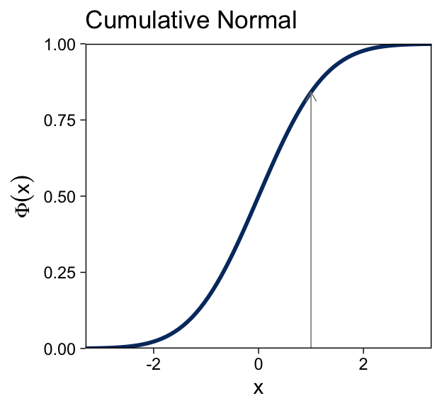
Terminology: The inverse of the cumulative normal is called the probit function. [“Probit” stands for “probability unit”; Bliss (1934)]. The probit function maps a value \(p\), for \(0.0 \leq p \leq 1.0\), onto the infinite real line, and a graph of the probit function looks very much like the logit function. (p. 439, emphasis in the original)
15.3.2 From predicted central tendency to noisy data
In the real world, there is always variation in \(y\) that we cannot predict from \(x\). This unpredictable “noise” in \(y\) might be deterministically caused by sundry factors we have neither measured nor controlled, or the noise might be caused by inherent non-determinism in \(y\). It does not matter either way because in practice the best we can do is predict the probability that \(y\) will have any particular value, dependent upon \(x\)…
To make this notion of probabilistic tendency precise, we need to specify a probability distribution for \(y\) that depends on \(f (\operatorname{lin} (x))\). To keep the notation tractable, first define \(\mu = f (\operatorname{lin} (x))\). The value \(\mu\) represents the central tendency of the predicted \(y\) values, which might or might not be the mean. With this notation, we then denote the probability distribution of \(y\) as some to-be-specified probability density function, abbreviated as “pdf”:
\[y \sim \operatorname{pdf} \big ( \mu, [\text{scale, shape, etc.}] \big )\]
As indicated by the bracketed terms after \(\mu\), the pdf might have various additional parameters that control the distribution’s scale (i.e., standard deviation), shape, etc.
The form of the pdf depends on the measurement scale of the predicted variable. (pp. 440–441, emphasis in the original)
The top panel of Figure 15.9 is tricky. One way to make those multiple densities tipped on their sides is with ggridges::geom_ridgeline() followed by coord_flip(). However, explore a different approach that’ll come in handy in many of the plots we’ll be making in later chapters. The method requires we make a data set with the necessary coordinates for the side-tipped densities. Let’s walk through that step slowly.
# Define the 3 x-values we want the Gaussians to originate from
curves <- tibble(x = seq(from = -7.5, to = 7.5, length.out = 4)) |>
# Use the formula 10 + 2x to compute the expected y-value for x
mutate(y_mean = 10 + (2 * x)) |>
# Based on a Gaussian with `mean = y_mean` and `sd = 2`, compute the 99.5% intervals
mutate(ll = qnorm(0.0025, mean = y_mean, sd = 2),
ul = qnorm(0.9975, mean = y_mean, sd = 2)) |>
# Now use those interval bounds to make a sequence of y-values
mutate(y = map2(.x = ll, .y = ul, .f = seq, length.out = 100)) |>
# Since that operation returned a nested column, we need to `unnest()`
unnest(y) |>
# Compute the density values
mutate(density = map2_dbl(y, y_mean, dnorm, sd = 2)) |>
# Now rescale the density values to be wider.
# Since we want these to be our x-values, we'll
# just redefine the x column with these results
mutate(x = x - density * 2 / max(density))
str(curves)tibble [400 × 6] (S3: tbl_df/tbl/data.frame)
$ x : num [1:400] -7.54 -7.55 -7.55 -7.56 -7.57 ...
$ y_mean : num [1:400] -5 -5 -5 -5 -5 -5 -5 -5 -5 -5 ...
$ ll : num [1:400] -10.6 -10.6 -10.6 -10.6 -10.6 ...
$ ul : num [1:400] 0.614 0.614 0.614 0.614 0.614 ...
$ y : num [1:400] -10.6 -10.5 -10.4 -10.3 -10.2 ...
$ density: num [1:400] 0.00388 0.00454 0.0053 0.00617 0.00715 ...In case it’s not clear, we’ll be plotting with the x and y columns. Think of the other columns as showing our work. But now we’ve got those curves data, we’re ready to simulate the points and plot.
# How many points would you like?
n_samples <- 750
# Generate the points
tibble(x = runif(n = n_samples, min = -10, max = 10)) |>
mutate(y = rnorm(n = n_samples, mean = 10 + 2 * x, sd = 2)) |>
# Plot!
ggplot(aes(x = x, y = y)) +
geom_vline(xintercept = 0) +
geom_hline(yintercept = 0) +
geom_point(size = 1/5) +
geom_abline(intercept = 10, slope = 2,
color = viridis_pal(option = "E")(9)[2], linewidth = 1) +
geom_path(data = curves,
aes(group = y_mean),
color = viridis_pal(option = "E")(9)[2], linewidth = 3/4) +
labs(y = "y",
title = "Normal PDF around Linear Function") +
coord_cartesian(ylim = c(-10, 30))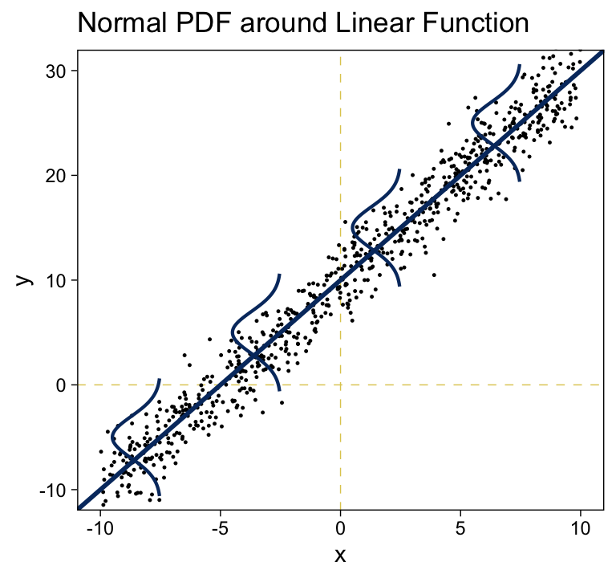
We’ll revisit this method in Chapter 17. The wireframe plots at the bottom of Figure 15.9 and in Figure 15.10 are outside of our ggplot2 purview. However, we can continue on with our approach of expressing the third \(y\) dimension as fill gradients. Thus, here’s a version of the bottom of Figure 15.9.
# How many points would you like?
n_samples <- 750
# Generate and save the points
set.seed(15)
d <- tibble(x1 = runif(n = n_samples, min = 0, max = 10),
x2 = runif(n = n_samples, min = 0, max = 10)) |>
mutate(y = rnorm(n = n(), mean = 10 + 1 * x1 + 2 * x2, sd = 4))
# Make the grid
crossing(x1 = seq(from = 0, to = 10, by = 0.5),
x2 = seq(from = 0, to = 10, by = 0.5)) |>
mutate(y = 10 + 1 * x1 + 2 * x2) |>
# Plot!
ggplot(aes(x = x1, y = x2, fill = y)) +
geom_raster() +
geom_point(data = d,
shape = 21, stroke = 1/10) +
scale_color_viridis_c(option = "E", limits = c(0, 50)) +
scale_fill_viridis_c(option = "E", limits = c(0, 50)) +
scale_x_continuous(expression(x[1]), expand = c(0, 0), breaks = 0:5 * 2) +
scale_y_continuous(expression(x[2]), expand = c(0, 0), breaks = 0:5 * 2,
position = "right") +
coord_equal() +
labs(subtitle = expression("y ~ N(m, sd=4), "*m==10+1*x[1]+2*x[2])) +
theme(legend.position = "left")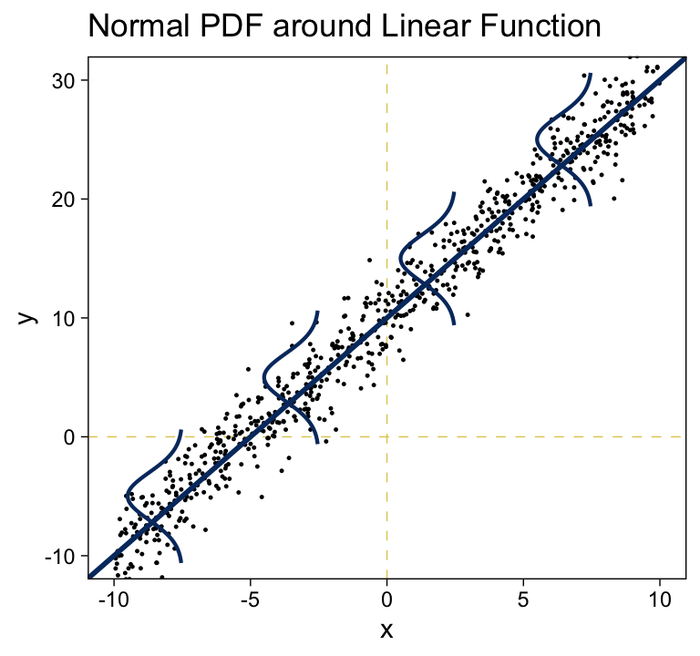
For Figure 15.10, we can simulate Bernoulli distributed data with the rbinom() function, provided we set size = 1.
# How many points would you like?
n_samples <- 750
# Generate and save the points
set.seed(15)
d <- tibble(x1 = runif(n = n_samples, min = -6, max = 6),
x2 = runif(n = n_samples, min = -6, max = 6)) |>
mutate(y = rbinom(n = n(), size = 1, prob = logistic(1 * (0.71 * x1 + 0.71 * x2 - 0))))
# Make the grid
crossing(x1 = seq(from = -6, to = 6, by = 0.5),
x2 = seq(from = -6, to = 6, by = 0.5)) |>
mutate(y = logistic(1 * (0.71 * x1 + 0.71 * x2 - 0))) |>
# Plot!
ggplot(aes(x = x1, y = x2, fill = y)) +
geom_raster() +
geom_text(data = d,
aes(label = y, color = factor(y)),
size = 2.5) +
scale_x_continuous(expression(x[1]), expand = c(0, 0), breaks = -3:3 * 2) +
scale_y_continuous(expression(x[2]), expand = c(0, 0), breaks = -3:3 * 2,
position = "right") +
scale_color_manual(values = c("white", "black"), breaks = NULL) +
scale_fill_viridis_c(expression(italic(p)(y==1)), option = "E", limits = 0:1) +
coord_equal() +
labs(subtitle = expression("y ~ Bernoulli(m), "*m==logistic(1*(0.71*x[1]+0.71*x[2]-0)))) +
theme(legend.position = "left")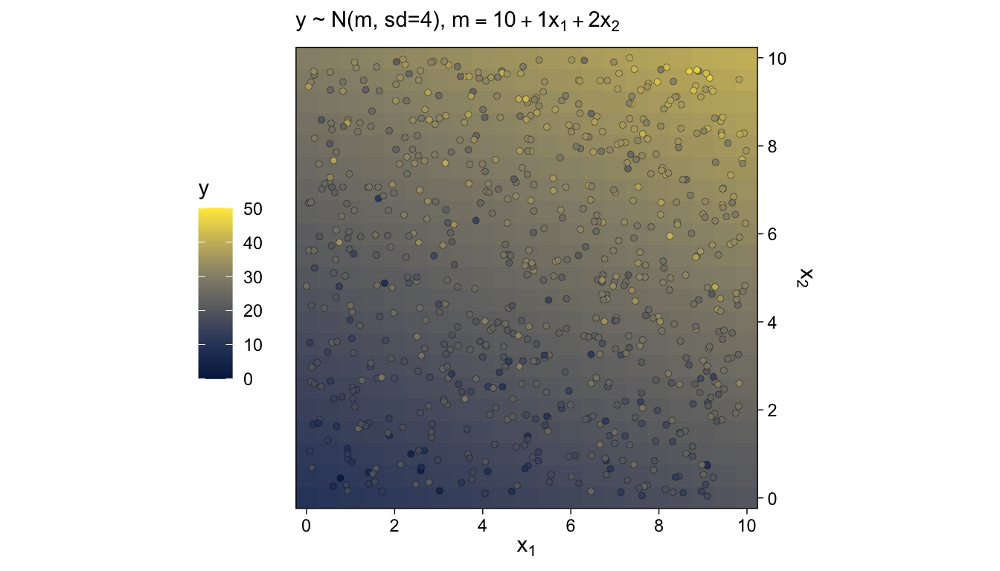
Because of their use of the logistic function, we typically refer to models of this kind as logistic regression.
15.4 Formal expression of the GLM
We can write the GLM as
\[\begin{align*} y & \sim \operatorname{pdf} \big (\mu, [\text{parameters}] \big ), \text{where} \\ \mu & = f \big (\operatorname{lin}(x), [\text{parameters}] \big ). \end{align*}\]
As has been previously explained, the predictors \(x\) are combined in the linear function \(\operatorname{lin}(x)\), and the function \(f\) in [the first equation] is called the inverse link function. The data, \(y\), are distributed around the central tendency \(\mu\) according to the probability density function labeled “pdf.” (p. 444)
15.4.1 Cases of the GLM
When a client brings an application to a [statistical] consultant, one of the first things the consultant does is find out from the client which data are supposed to be predictors and which data are supposed to be predicted, and the measurement scales of the data… When you are considering how to analyze data, your first task is to be your own consultant and find out which data are predictors, which are predicted, and what measurement scales they are. (pp. 445–446)
Soak this last bit in. It’s gold. I’ve found it to be true in my exchanges with other researchers and with my own data problems, too.
Session info
sessionInfo()R version 4.5.1 (2025-06-13)
Platform: aarch64-apple-darwin20
Running under: macOS Ventura 13.4
Matrix products: default
BLAS: /Library/Frameworks/R.framework/Versions/4.5-arm64/Resources/lib/libRblas.0.dylib
LAPACK: /Library/Frameworks/R.framework/Versions/4.5-arm64/Resources/lib/libRlapack.dylib; LAPACK version 3.12.1
locale:
[1] en_US.UTF-8/en_US.UTF-8/en_US.UTF-8/C/en_US.UTF-8/en_US.UTF-8
time zone: America/Chicago
tzcode source: internal
attached base packages:
[1] stats graphics grDevices utils datasets methods base
other attached packages:
[1] viridis_0.6.5 viridisLite_0.4.2 lubridate_1.9.4 forcats_1.0.1 stringr_1.6.0 dplyr_1.1.4 purrr_1.2.0
[8] readr_2.1.5 tidyr_1.3.1 tibble_3.3.0 ggplot2_4.0.1 tidyverse_2.0.0
loaded via a namespace (and not attached):
[1] gtable_0.3.6 jsonlite_2.0.0 compiler_4.5.1 tidyselect_1.2.1 gridExtra_2.3 scales_1.4.0
[7] yaml_2.3.10 fastmap_1.2.0 R6_2.6.1 labeling_0.4.3 generics_0.1.4 knitr_1.50
[13] htmlwidgets_1.6.4 pillar_1.11.1 RColorBrewer_1.1-3 tzdb_0.5.0 rlang_1.1.6 stringi_1.8.7
[19] xfun_0.53 S7_0.2.1 timechange_0.3.0 cli_3.6.5 withr_3.0.2 magrittr_2.0.4
[25] digest_0.6.37 grid_4.5.1 rstudioapi_0.17.1 hms_1.1.4 lifecycle_1.0.4 vctrs_0.6.5
[31] evaluate_1.0.5 glue_1.8.0 farver_2.1.2 rmarkdown_2.30 tools_4.5.1 pkgconfig_2.0.3
[37] htmltools_0.5.8.1 Footnotes
For more, see this documentation.↩︎
You can also just use the base
plogis()function. Execute?plogisfor the documentation.↩︎